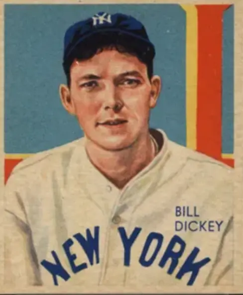

Bill Dickey
Career Highlights & Facts
(Facts are AI-generated and may require verification)
- Mentored a legendary successor behind the plate, teaching the fundamentals of catching and game management.
- Broke a jaw in 2 places during a home-plate collision that resulted in a 30-day suspension.
- Hit grand slams on 2 consecutive days, matching a record previously set by a teammate.
Would you like to find out more about Bill Dickey?
The young prospect was having a hard time adjusting to the backstop position in the major leagues. Offensively, he was a threat from the beginning of his career. He was a classic bad-ball hitter who could get wood on the ball no matter where the pitch was: high, low, outside. He hit them all. But no one really taught him how to master the “ins and outs” of catching. He was lacking the fundamentals of the position. The young man, who hailed from The Hill section of St. Louis, Missouri, was short and stocky with ears protruding awkwardly from his head.
Lawrence “Yogi” Berra
had all the labels attached to him. “Can’t miss.” “Sure thing” – they followed him through his short minor-league career. But the New York Yankees’ general manager,
George Weiss
, formerly the team’s farm director, was as familiar with Berra’s game as anyone and knew that all Yogi needed was someone to mold his ability. Weiss asked Bill Dickey in 1949 to join manager
Casey Stengel’s
staff and work primarily with Berra. Dickey, whose hitting and catching eventually got him into the Hall of Fame, jumped at the opportunity. Although
The Sporting News
wrote that “Berra was a question mark insofar as his availability as a catcher is concerned,” Dickey went to work on his protégé. Dickey used repetition and more repetition, teaching Berra tricks of the trade for handling fouls and popups, making plays at the plate, working with the pitcher, maintaining the right stance and balance when throwing out a baserunner. He drilled into the young man’s head the concept that the catcher is the extension of the manager on the diamond. The catcher controls the game, and contributes more than just catching the baseball. Berra, he of sayings that often made you stop and scratch your head, explained that “Bill was learning me all his experience.”
Dickey proclaimed that Berra would be the best catcher in the American League within two years. It did not take that long; Berra was king of the backstops early in the 1949 season. “I always say I owe everything I did in baseball to Bill Dickey. He was a great man,” said Berra.
William Malcolm Dickey was born on June 6, 1907, in Bastrop, Louisiana, one of seven children born to John and Laura Dickey. The family relocated to Kensett, Arkansas, where John Dickey worked as a brakeman for Missouri Pacific Railroad. The Dickeys were a baseball family; John Dickey had been a pitcher and catcher for Memphis in a semipro league, older brother Gus played second base and pitched in the East Arkansas Semipro League, younger brother
George “Skeets” Dickey
was a major-league catcher for six seasons with Chicago and Boston of the American League.
Bill played second base on the Kensett town team when he was young and pitched at Searcy High School. After graduation, he enrolled at Little Rock College, where he played guard on the football team and pitched on the baseball team. Jimmy Froley, a friend of Dickey’s, was the regular catcher for a semipro team in Hot Springs, Arkansas. One weekend Froley could not make the scheduled games and urged Dickey to take his place. Bill was reluctant, but reported to Hot Springs manager Roy Gillenwater. It didn’t take Dickey long to make an impression on Gillenwater with his strong throwing arm, but he also caught the eye of Lena Blackburne, the manager of the Little Rock Travelers in the Southern Association. Blackburne had come to Hot Springs to scout an outfielder, Paul Philips, but left with the signature of Bill Dickey on the back of his Elks membership card, in lieu of a contract, to play for the Travelers in 1925.
Little Rock had a working agreement with the Chicago White Sox, often sending area players to Muskogee, Oklahoma, of the Class C Western League and Jackson, Mississippi, of the Class D Cotton States League.
Eighteen-year-old Dickey followed this well-worn path. He played in only three games for Little Rock in 1925. He moved on to Muskogee in 1926, batted .283 in 61 games, returned to Little Rock toward the end of the season, and batted a sizzling .391 in 17 games.
Playing in 101 games for the Jackson Senators in 1927, Dickey hit .297 with three home runs, while fielding at a .989 clip. He was credited with 84 assists and committed only nine errors.
But Jackson waived its rights to Dickey, and he was claimed by the New York Yankees, at the urging of scout Johnny Nee. Nee was so enamored with Dickey, that he wired general manager
Ed Barrow
that “I will quit scouting if this boy does not make good.” The Yankees paid the $12,000 waiver price, and Nee did not have to worry about making good on his offer to Barrow. After a return stop in Little Rock, where he hit .300 in 60 games, Dickey was promoted to Buffalo of the International League. After playing in only three games, Dickey made his way downstate to the Bronx and the parent Yankees.
Dickey made his major-league debut at
Yankee Stadium
on August 15, 1928, subbing for
Benny Bengough
. He broke into the hit column nine days later, on August 24, with a triple off
George Blaeholder
of the St. Louis Browns. Dickey played in ten games to close out the year and was a spectator as the Yankees won their third straight pennant and swept the Cardinals to take their second World Series in a row.
The 1929 season began the transition from the famed Murderers’ Row teams that had dominated the American League in the late 1920s to the Bronx Bombers era of the ’30s. As great as the Yankees were during the Murderers’ Row period, they were relatively weak at one position, catcher. Benny Bengough,
John Grabowski
, and
Pat Collins
shared the catching duties, but none of the three stepped up to take ownership of the position. Dickey’s arrival changed that; all three were gone from the Yankees roster within two years. “He’s going to be a great one,” Yankees manager
Miller Huggins
predicted of Dickey. Indeed, starting in 1929, Dickey caught in at least 100 games for the next 13 seasons.
As a young hitter, Dickey could not help but be influenced by the great Yankees sluggers. Often the young left-handed batter would try to emulate
Babe Ruth
Bob Meusel
Lou Gehrig
, or
Tony Lazzeri
. “Stop unbuttoning your shirt on every pitch,” Huggins advised Dickey. “We pay one player here for hitting home runs and that’s Babe Ruth. So choke up and drill the ball. That way, you’ll be around here longer.” Dickey soon stopped trying to pull every pitch; instead he settled for making solid contact.
Batting mostly seventh in the batting order, Dickey indeed drove the ball in 1929. He batted .324 with 10 home runs and 65 runs batted in – impressive numbers for the rookie with the Ozark drawl in his voice. Even more impressive was that over 130 games, he led all catchers with 95 assists and 13 double plays. As Huggins had predicted, he was on his way to a great career.
At first, the Yankees were unable to duplicate Dickey’s success.
Connie Mack’s
Philadelphia Athletics started a three-year run as kings of the American League, winning the pennant in 1929 by 18 games over second-place New York. The season ended tragically for New York. On September 20, Huggins reported to Yankee Stadium sporting an ugly red blotch under his left eye. He was taken to a hospital and died five days later from erysipelas: an acute infectious skin disease.
Bob Shawkey
, a three-time 20-game winner for the Yankees and a coach under Huggins in 1929, took the reins of the team in 1930.
Offensively, the Yankees were as powerful as ever in 1930. Ruth and Gehrig combined for 90 home runs and, along with second baseman Tony Lazzeri, combined for 448 RBIs. Every starting position player hit at least .289. Dickey hit .339, proving that his rookie campaign was no fluke. The Yankees averaged 6.9 runs per game. But none of the starting pitchers had an ERA under 4.00. The Yankees finished in third place, 16 games behind the Athletics, and Shawkey was fired.
Joe McCarthy
took over the responsibility of righting the Yankees ship. McCarthy had piloted the Cubs to the World Series in 1929, only to lose the World Series to the Athletics in five games. (The Series will be remembered for Game Four, in which the Cubs, who were leading 8-0, gave up 10 runs in the seventh inning to the A’s, and lost, 10-8). In 1930, amid rumors that he would be fired and replaced by
Rogers Hornsby
, McCarthy quit with four games left to play in the season, and ultimately was hired by the Yankees.
New York finished second to the Athletics in 1931. Dickey continued his outstanding play. He made only three errors behind the plate and continued to swing a hot bat, with a .327 batting average and 78 RBIs. He collected five hits in a game on May 17 at Detroit’s
Navin Field
and had seven RBIs in a 17-0 pasting of the Browns on September 17 at Yankee Stadium. He was rewarded with the first of six nominations as catcher to
The Sporting News
All Star Team.
Dickey was known as a good teammate with a cool demeanor. He also was known as very friendly and easy-going off the field. But between the lines of the baseball diamond, he was a fierce but cool competitor. This was
never more evident than on July 4, 1932
, in the first game of a doubleheader at Washington. In the bottom of the seventh inning, Washington right fielder
Carl Reynolds
, on third base, broke for the plate on a suicide squeeze. When the bunt was missed, Reynolds returned to third safely and third baseman Joe Sewell muffed Dickey’s throw to the bag. Reynolds headed for home again and barreled into Dickey, who dropped Sewell’s return throw. As Reynolds returned to the plate to make sure he had touched it, Dickey punched him in the jaw, breaking it in two places. Dickey thought Reynolds had deliberately tried to injure him. American League president
Will Harridge
fined Dickey $1,000 and suspended him for 30 days. Yankees owner
Col. Jacob Ruppert
and general manager Ed Barrow appealed the fine and suspension, but it was upheld. Washington owner
Clark Griffith
wanted Dickey suspended for as long as Reynolds could not play for the Senators. As it turned out, Reynolds returned on August 13, nine days after Dickey was reinstated. Even with Dickey out of the lineup, replaced by Arndt Jorgens, the Yankees had little trouble coasting to a first-place finish.
Dickey was very remorseful for his actions. “I never was so sorry about a thing in my life,” he said. “It seems that the Senators had shouted to Carl to return and touch the plate. There had been bad blood between the two clubs. I thought he was coming back to strike me. I struck first. That tells the whole story. I felt terrible about what I’d done and deserved the punishment, which was considerable.”
The Yankees won the pennant by 13 games over Philadelphia and swept the Cubs in the World Series. Dickey had another fine season, hitting .310, with 15 home runs and 84 RBIs. But he really shined in his first World Series appearance. At the plate he went 7-for-16. He also walked twice, knocked in four runs and scored two runs. Behind the plate, he was errorless.
On October 5, three days after the Series concluded, Dickey married Violet Arnold, a New York showgirl, at St. Mark’s Church in Jackson Heights, New York. They had one child, Lorraine, who was born in 1935.
The Yankees went another three years before they claimed another pennant, finishing second each year. Dickey was his usual steady self at bat and behind the plate in 1933. He was named to
The Sporting News
All Star Team for the second consecutive year after he hit .318, drove in 97 runs, and made only six errors.
Baseball’s first All Star Game was held in 1933. It began as a one-time-only event, in conjunction with the World’s Fair in Chicago, but turned into a permanent institution. A national fan poll was held to help managers Connie Mack and
John McGraw
choose their rosters. As American League catcher, Dickey was the fans’ choice over
Mickey Cochrane
of Philadelphia by almost 123,000 votes (297,382 votes to 174,530 votes). Neither Dickey nor Cochrane played in the game, however;
Rick Ferrell
of the Boston Red Sox, named to the squad as the only Red Sox representative, caught all nine innings as the American League won 4-2.
After
Joe Sewell
, Lou Gehrig’s road-trip roommate, was released by the Yankees at the end of the 1933 season, Dickey moved into that role. It seemed an unlikely pairing; one was from the East Coast and spoke with a New York accent. The other was a Southerner with a drawl. One graduated from Columbia University; the other left a small college in Little Rock after one year. But Dickey said they both shared a lot of the same interests. “I was a close friend of Gehrig’s long before I succeeded Joe Sewell as his roommate,” said Dickey. “Lou and I liked to do the same things. We liked movies, same foods, same hours. We liked to talk baseball, we had similar ideas, we looked at life much in similar ways.”
Dickey was picked for the All-Star Game again in 1934, and this time he played. He singled in the second inning to end
Carl Hubbell’s
string of five consecutive strikeouts of future members of the Hall of Fame (Ruth, Gehrig,
Jimmie Foxx
Al Simmons
, and
Joe Cronin
). Cochrane replaced Dickey behind the plate in the seventh inning as the American League won, 9-7. Dickey’s season was cut short when he broke the second finger of his right hand in a game against Cleveland on August 22. The incident happened in the ninth inning when the finger was struck by a foul tip off the bat of Cleveland pitcher
Mel Harder
.
The Yankees finished in second place to Detroit in 1934 and 1935. It was a period of transition in the Bronx. Ruth had played his last year in pinstripes in 1934.
Earle Combs
’ last year in baseball was 1935.
Ben Chapman
was traded to Washington in mid-season 1936.
Frank Crosetti
George Selkirk
, and
Red Rolfe
were now established starters.
But in 1936, with the arrival of
Joe DiMaggio
, the Bronx Bombers rebounded, and they won the World Series in six of the next eight years.
Dickey had a career year in 1936, hitting .362, good for third in the league behind
Luke Appling
(.388) and
Earl Averill
(.378). With 22 home runs and 107 RBIs, he started a string of four consecutive years of hitting at least 20 home runs and driving in 100 runs. His work behind the plate was also spectacular during this period. Dickey led the league in putouts (1937-1939), assists (1937-1938), and fielding percentage (1939). The Yankees finished with a record of 102-51 in 1936, cruising to the pennant over Detroit by 19½ games. Though the Bronx Bombers outslugged their crosstown rival Giants to win the World Series in six games, Dickey did not have the best of Series offensively. He was 3-for-25 at the plate for a batting average of .120. He went 2-for-5 with a home run and five RBIs in Game Two, but was 1-for-20 in the other five games. “I guess (Giants manager)
Bill Terry’s
pitchers were just too good,” Dickey said. Gehrig heard Bill’s comment and let the reporters in on a secret. “Bill didn’t tell you he had a broken bone in his hand all during the Series,” said the Yankees captain. “He could hardly get his hand around a bat. He kept it quiet because he didn’t want Terry to know that he wasn’t the usual threat at the plate.”
The Yankees won the World Series the next three years over the Giants (1937), Cubs (1938), and Reds (1939), sweeping the latter two. As McCarthy for the most part used his pitchers as interchangeable parts – most starters relieved and relievers started — Dickey became the manager on the field, even more valuable. His leadership and influence got the most out of the Yankees’ pitching arms. Seldom did a pitcher leave the Yankees and get better.
Charlie Devens
, a little-used pitcher for New York from 1932 to 1934, said, “I was lucky to work with Hall of Fame catcher Bill Dickey, who was always one pitch ahead of the batters. He not only called a great game, but had the best arm I’d ever seen.”
Ernie Bonham
, a 21-game winner in 1942, said, “I never shake Dickey off. I just let him pitch my game for me.”
Dickey put up his biggest power numbers in 1937, with 29 home runs, 35 doubles, 176 hits, and 133 RBIs, all career highs. In one seven-day stretch, July 29-August 4, he flashed big power: On the 29th, he hit a bases-empty home run in the bottom of the ninth to lead the Yankees to a 7-6 win over visiting Detroit. On the 31st, he hit a two-run shot in a 9-6 loss to the Browns. On August 3 and 4, he hit grand slams against the White Sox – off
John Whitehead
on the 3rd and off
Vern Kennedy
on the 4th. The two slams tied a record set by Ruth for grand slams on successive days.
Despite a six-game losing streak in mid-September of 1938, the Bombers still claimed the pennant with a comfortable 9½-game cushion over the Red Sox. They swept the Cubs in the World Series as Dickey went 6-for-15 at the plate.
The Yankees’ world was changing. Col. Jacob Ruppert died on January 13, 1939. Lou Gehrig reported to St. Petersburg, Florida, for 1939 spring training weak and tiring. Dickey could see that his roommate was suffering, but was also holding out hope that he would return to past glory. “Pay no attention to Lou’s slow development,” said Dickey during spring training. “He’s sound, his timing is coming along and when we open in Boston a week from Monday, he’ll be the same old Iron Horse. If there is anybody on this club that I really know, it’s Lou.”
Gehrig’s return to his usual high standard of performance was not to be. He went to McCarthy and asked to be replaced in the lineup since he was of no help to the team. On May 2, his playing streak ended at 2,130 games. Eventually he was diagnosed with amyotrophic lateral sclerosis, now known as Lou Gehrig’s disease, and he died in 1941.
Despite losing Gehrig, the Yankees marched forward, topping Boston by 17 games to land on top of the American League. Dickey hit .302, the last time his average exceeded .300 in a full season. Of his 24 home runs, three came on July 26 against the St. Louis Browns. In the World Series, he hit two home runs and drove in five runs as the Yankees swept Cincinnati.
In 1940, the Yankees lost a hotly contested pennant race to Detroit. Even though they won 10 of their last 12 games, they finished in third place, two games behind the Tigers and one game behind second place Cleveland. Dickey, now 33 years old, had his worst season at bat, his batting average dropping to .247. He hit only nine home runs and drove in 54 runs. Some wondered if age was catching up to him. He was in his 12th season of catching more than 100 games, tying the record of both
Ray Schalk
and
Gabby Hartnett
. His hitting did not have the same power, or sharpness. He was being benched in favor of right-handed-hitting
Buddy Rosar
when the opposition started a left-handed pitcher.
The Yankees rebounded in 1941, and so did Bill. It was a season of lasts for him; he played in 109 games, making it the 13th and final season that he would top the century mark. He led the league in fielding for the final time as well, with a .994 fielding average. It was also the last time he would be named to
The Sporting News
All Star Team. Dickey hit .284 for the season and drove in 71 runs. He posted a 21-game hitting streak, in games that he started, in the early part of the season. The Yankees coasted past Boston to win the pennant by 17 games and beat Brooklyn in five games in the World Series.
In spite of their accomplishments, the season was bordered in black when on June 2 Gehrig lost his battle with ALS. McCarthy and Dickey represented the team at the funeral in New York while the rest of the Yankees were on their western swing through Cleveland and Detroit. A month later at Yankee Stadium, more than 60,000 turned out to pay their respects at a memorial for Gehrig. Dickey started his speech, “This memorial to Lou Gehrig is a tribute of the Yankees to the greatest first baseman and pal in the history of the game.” Dickey then broke down.
Five months later, the Japanese attacked Pearl Harbor, and the United States was in World War II. President Franklin Delano Roosevelt, while giving baseball a green light to continue playing, emphasized that players would be treated just like other men who were eligible for the draft. It took many months for the nation’s Selective Service machinery to get into full gear, and the draft affected relatively few players in 1942. Dickey remained with the Yankees in 1942 and 1943 but he missed the 1944 and 1945 seasons in military service.
New York picked up catcher
Rollie Hemsley
, waived by Cincinnati, in the middle of the 1942 season. The much-traveled veteran provided seasoned support behind the plate; further reducing Dickey’s playing time. Bill played in less that 90 games in each of the next two years, giving him less than 300 at-bats in each season. In 242 at-bats in 1943, he hit .351. The Bombers won the pennant in both 1942 and 1943, each year facing the St. Louis Cardinals in the World Series. The Cardinals won in 1942, the Yankees in ’43. Each Series went five games, and Dickey caught them all. His two-run homer in Game Five of the 1943 Series was decisive as the Yankees won, 2-0.
Dickey entered the Navy on June 3, 1944, with the rank of lieutenant junior grade. He served as an athletic officer in the Pacific and managed the Navy team that won 1944 Service World Series in Hawaii.
When Dickey returned from the war in 1946, the Yankees had new owners; Jake Ruppert’s heirs had sold the team for $2.8 million to
Del Webb
Dan Topping
, and
Larry MacPhail
. The Yankees were an aging team, and it showed early as the Red Sox jumped off to a huge lead and won the pennant. The Yankees finished in third place, 17 games out. Joe McCarthy resigned in May and Dickey was selected to lead the team for the remainder of the season and 1947. As manager, he relinquished the bulk of the catching to
Aaron Robinson
. The Yankees went 57-48 under Dickey, but when he questioned new owner Larry MacPhail about his future status with the team, MacPhail would not commit to him as manager. Dickey resigned with 14 games left in the season, and was succeeded by one of his coaches,
Johnny Neun
. “I have no hard feelings about not managing,” Dickey said. “I didn’t enjoy it.”
Still, Dickey did manage a team in 1947, the Little Rock Travelers of the Southern Association. However, it was a horrendous season as the team finished in last place with a record of 51-103.
MacPhail resigned from the Yankees after they won the 1947 World Series. George Weiss took over as general manager and brought Dickey back into the fold. “I never will forget the thrill I got one day when the telephone rang and I heard George M. Weiss say, ‘Bill, how would you like to come back to the Yankees and coach for Stengel?’ How would I? It was one of the most satisfying moments of my life,” Dickey recalled.
He became the first-base coach, but he was also asked to take young Berra under his wing. Later, when Berra was moved to the outfield, Dickey tutored
Elston Howard
on playing the backstop position. “You’ve got to have Bill work with you to understand how much he can help you,” said Howard. “The year I came to the Yankees from Toronto, I wasn’t as good as a lot of semipro catchers. Bill took me over and he talked to me. Then he worked with me. We’d go off in a corner and practice. Without Bill, I’m nobody. Nobody at all. He made me a catcher. Now when I start to slip and get careless, there’s old Bill to give me a hand.”
Dickey was elected to the Hall of Fame in 1954. He said the honor was “the nicest thing ever to happen to me.”
Dickey retired from baseball after serving as a scout for the Yankees in 1959. He made a brief return in 1963 to help Stengel when Casey managed the New York Mets. Dickey helped tutor the catchers for a brief time during spring training. He returned to Yankee Stadium at times for special events. Two such instances were the retirement of his No. 8 jersey in 1972 and when he was given a plaque in Monument Park in 1988.
After his retirement from baseball, Bill worked for his brother George selling securities at Stephens Inc. in Little Rock until 1977. Dickey died on November 12, 1993, at the Rose Care Nursing Center in Little Rock. He was survived by his second wife, Mary Jess Long Dickey, a son, Robert, and two daughters, Mary Louise and Violet Lorraine.
In his 17-year career, Dickey played in eight World Series, winning seven. He was named to the All-Star Team 11 times and played in eight of the games. In 1,708 games behind the plate, his fielding percentage was .988. His career batting average was .313, and he owned a .382 on-base percentage. In 6,300 career at-bats, Dickey struck out only 289 times. He hit over .300 in 11 of his 17 seasons.
Perhaps the greatest compliment that can be bestowed on a player is one that comes from a fellow Hall of Famer. “Bill Dickey is the best (catcher) I ever saw,” said Cleveland pitcher
Bob Feller
. “He was as good as anyone behind the plate, and better with the bat. There are others I’d include right behind Dickey, but he was the best all-around catcher of them all. I believe I could have won 35 games if Bill Dickey was my catcher.”
Votano, Paul.
Tony Lazzeri; A Baseball Biography.
Jefferson, North Carolina: McFarland & Company Inc. Publishing, 2005.
Barra, Allen.
Yogi Berra: Eternal Yankee.
New York: W.W. Norton and Company, 2009.
Eig, Jonathan.
Luckiest Man: The Life and Death of Lou Gehrig.
New York: Simon and Schuster, 2005.
Levitt, Daniel R.
Ed Barrow: The Bulldog Who Built the Yankees Dynasty.
Lincoln: University of Nebraska Press, 2008.
Stout, Glenn, and Richard A. Johnson.
Yankees Century.
Boston: Houghton Mifflin Company, 2002.
Gilbert, Bill.
Now Pitching — Bob Feller.
New York: Birch Lane Press, 1990.
Simon, Tom, ed.
Deadball Stars of the National League.
Dulles, Virginia: Brasseys Inc. 2004. (Miller Huggins, by Stuart Schimler).
Spatz, Lyle, ed.
The SABR List and Record Book.
New York: Scribner; 2007.
http://www.sabr.org/
http://minors.sabrwebs.com/cgi-bin/index.php
http://www.baseballinwartime.com/index.htm
http://www.baseballlibrary.com/homepage/
http://www.retrosheet.org/
http://newyork.yankees.mlb.com/index.jsp?c_id=nyy
Various issues of the
New York Times.
Various issues of
The Sporting News.
National Baseball Hall of Fame Archives.
United States Census Bureau, 1910, 1920.
Full Name
William Malcolm Dickey
Born
June 6, 1907 at Bastrop, LA (USA)
Died
November 12, 1993 at Little Rock, AR (USA)
Stats
Baseball Reference
Retrosheet
Hall of Fame
Managers
Siblings
Career Totals
| WAR | AB | H | HR | BA | R | RBI | SB | OBP | SLG | OPS | OPS+ |
|---|---|---|---|---|---|---|---|---|---|---|---|
| 56.4 | 6300 | 1969 | 202 | .313 | 930 | 1209 | 36 | .382 | .486 | .868 | 127 |
Statistics via Baseball-Reference.com
The Original Clue